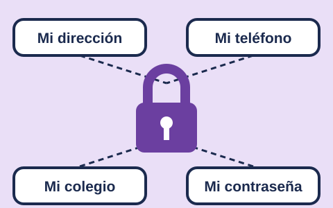

Lección 1 de 3: Mis datos son míos
Mira el dibujo

Lo que enseña el video: se explica qué datos son privados, como el nombre completo, la dirección, el teléfono, el colegio y las contraseñas, y por qué no se comparten en internet sin permiso de un adulto.
Lee con calma
Tus datos son información sobre ti. Tu nombre completo, tu dirección, tu teléfono, tu colegio y tus contraseñas son datos privados.
Los datos privados son como la llave de tu casa. No se los das a cualquiera.
No escribas tus datos en juegos, chats ni páginas. Antes de dar un dato, pregunta a un adulto de confianza.
Tus contraseñas son secretas. Solo las conocen tú y tus papás o cuidadores.